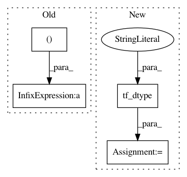

d1ae17e7f6a0916add0d2b4521acab3fbb42650e,tensorforce/core/models/model.py,Model,tf_initialize,#Model#,615
Before Change
), axis=0
)
default = tf.ones(shape=shape, dtype=util.tf_dtype(dtype="bool"))
shape = action_spec["shape"] + (action_spec["num_values"],)
self.auxiliaries_input[name] = self.add_placeholder(
name=name, dtype="bool", shape=shape, batched=True, default=default
)
After Change
else:
batch_size = tf.dtypes.cast(
x=tf.shape(input=next(iter(self.states_input.values())))[:1],
dtype=util.tf_dtype(dtype="long")
)
tf_shape = tf.constant(
value=(action_spec["shape"] + (action_spec["num_values"],)),
dtype=util.tf_dtype(dtype="long")
)
tf_shape = tf.concat(values=(batch_size, tf_shape), axis=0)
default = tf.ones(shape=((1,) + shape), dtype=util.tf_dtype(dtype="bool"))
self.auxiliaries_input[name] = self.add_placeholder(
name=name, dtype="bool", shape=shape, batched=True, default=default
)
In pattern: SUPERPATTERN
Frequency: 3
Non-data size: 4
Instances
Project Name: reinforceio/tensorforce
Commit Name: d1ae17e7f6a0916add0d2b4521acab3fbb42650e
Time: 2020-03-08
Author: alexkuhnle@t-online.de
File Name: tensorforce/core/models/model.py
Class Name: Model
Method Name: tf_initialize
Project Name: reinforceio/tensorforce
Commit Name: 5da11b7fd2ae6d5371fe519dd12983383e533ff5
Time: 2020-01-19
Author: alexkuhnle@t-online.de
File Name: tensorforce/core/models/model.py
Class Name: Model
Method Name: tf_initialize
Project Name: reinforceio/tensorforce
Commit Name: 5da11b7fd2ae6d5371fe519dd12983383e533ff5
Time: 2020-01-19
Author: alexkuhnle@t-online.de
File Name: tensorforce/core/models/model.py
Class Name: Model
Method Name: api_act